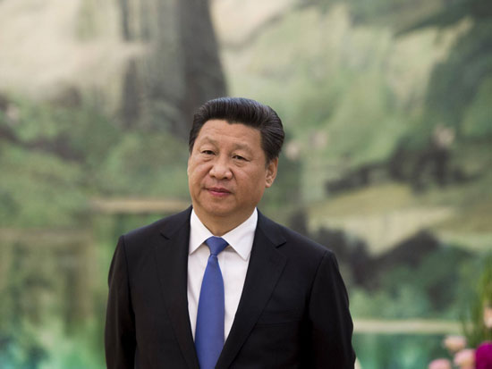

《习近平时代》：中共的领导力从哪里来
5月9日出版的《学习时报》继续选载美国学者熊玠主编的《习近平时代》，本篇分析中共的领导力从哪里来。文章如下：
2015年3月23日，91岁高龄的新加坡前总理李光耀去世，这位小国的大政治家曾有一个判断：西方民主制度可以有效问责，但是无法保证选出优秀的政府或领导人。
李光耀的观察是有一定道理的，西方的民主制度和政党制度从其设计初衷来讲就不是用来遴选优秀的领导团队。西方的政党和中共不一样，政党只是代表社会中一部分人利益的组织，没有哪个政党比其他的政党更优秀。选举的基本假设就是，大家都是平等的，谁也不比谁更好，谁更能准确地反映民众的诉求，谁就能通过选举获得胜利，取得政权。这种逻辑，在中国可能就是一种典型的“尾巴主义”。董必武对此曾有非常精到的批评：“有些同志以为实行群众路线不需要党来领导，这也不对。没有党的领导，群众利益是不能实现的。”“像群众长远的利益或最高的利益，群众自身往往是看不见的，必须有党领导，群众才不致走错路。”
作为马克思主义政党，中共承担着崇高的历史使命，能最充分地代表民众的利益，代表社会的整体利益而不是部分利益，用中共自己的语言来表述就是代表“最广大人民的根本利益”。马克思主义政党的先锋队逻辑与中国传统儒家的士大夫政治逻辑有某种契合之处，它们都强调要由一个优秀的团队肩负起领导责任，带领民众建立一个更加完善的秩序。这个优秀的团队既要能洞悉历史发展的规律，又要能回应民众的诉求。前者是先锋队逻辑的必然要求，后者则是一种民主或民本主义的要求。中共相信，这二者是能够有机统一起来的。
为什么党纪严于国法？这是中国共产党自身性质所决定的。作为先锋队性质的政党，党员是先锋队的一员，是特殊材料制成的人，应当发挥模范带头作用，将普通群众团结在自己周围，带领他们投身于党领导的事业中去。
“特殊材料”意味着党员要以更加严格的标准自我要求，无论是在道德方面，还是在能力方面，党员必须比普通公民更优秀才能无愧于党员的称号，这就是党纪严于国法的逻辑。国法是对一个公民的要求，是一种基本的要求；党纪是对一个党员的要求，它是一种更高的要求，也是党的先进性的要求。